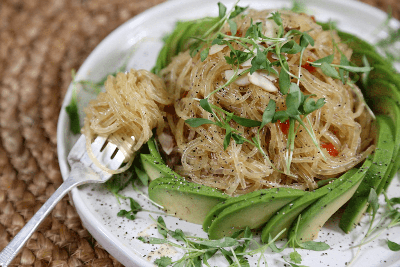

Kelp noodles are a seaweed-based noodle that is high in iodine, very low in calories, low in carbs, and high in fiber. Kelp noodles come in a package, and you can buy them at many health food stores or online. If you like your noodles crunchy, no preparation is required. If you want a softer noodle (much like spaghetti noodles), make sure that you don’t skip the softening technique that I shared below.

From the moment that I made this dish, I fell in love with it. As soon as I licked my plate clean (the sauce is that good), I was already dreaming of when I could make it again. It’s very filling and can be enjoyed at room temp, chilled, or even warmed up on a chilly day. Again, as mentioned above, the key is to soak the noodles properly to get that perfect noodle texture.
I remember when I first discovered these noodles, it wasn’t long after I got into the whole food way of eating. I was told to soak them in water with lemon or some acid to soften them, but that never really worked all that well. I think it was some sort of Jedi mind trick. Regardless, I ate them anyway. You know how it sounds in your head when you eat chips or crackers? It’s as if everyone within a block proximity can hear you eat? Well, when I ate these noodles, they crunched with an unsettling squeakiness that didn’t leave me really wanting more.
Kelp Noodles are a treasure from the sea!
So, what exactly are Kelp Noodles? Well, they are not really “noodles” at all, at least not in the traditional sense. They’re made from raw edible kelp seaweed, specifically from the thin colorless inner layer under the kelp’s outer skin. These thin, noodle-shaped strips of kelp are preserved in natural seaweed-derived salt (called sodium alginate).
Why I used Kelp Noodles
They are vegan, low-carb, zero-calorie, gluten-free, alkalizing, have 11 vitamins, 16 amino acids, and 46 minerals! The essential nutrients include iodine, iron, potassium, phosphorus, calcium, vitamin A, antioxidants, and B-complex vitamins. They have a neutral flavor that goes perfectly with just about anything. They taste great with pesto, cashew alfredo, raw marinara, or any other wide variety of sauces. I don’t recommend eating them every day because they can add too much iodine into your diet (especially if you have thyroid issues), and they can cause some stomach discomfort. BUT they are a great addition to cycle into your menu planning. I hope you enjoy this simple, delicious, and nutritious dish. blessings, amie sue
 Ingredients
Ingredients
Yields: 2-3 servings
Noodles: